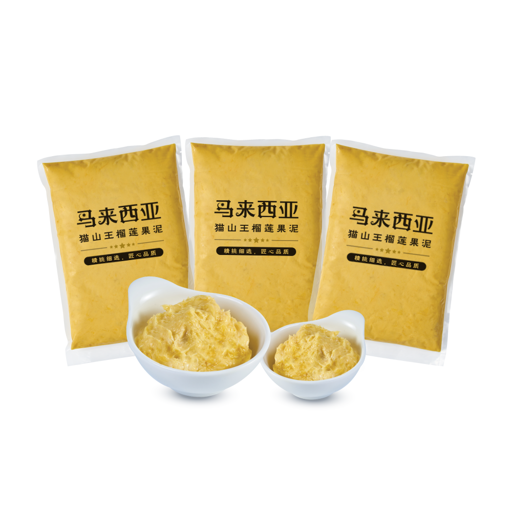

新鲜榴莲
榴莲是马来西亚国宝级的水果，有着“万果之王”的美誉。其果肉色泽金黄，口感柔软细腻，这些成熟后的榴莲果实会从树上自然掉落。经过农夫的收集和精心挑选，品质优良的榴莲、将送往榴莲加工厂进行清洗消毒，包装到运输。我们都坚持做好每一项环节，严格品管，只为了确保每一颗榴莲都是最佳品质。
| 净重 | 保质期 | 榴莲品种 |
|---|---|---|
| 10 公斤/ 箱 | 5 – 7 天 | D197 (猫山王)/D24 (苏丹王)/D200 (黑刺) |
| 发货方式 | 储存温度 | |
| 空运 | 5 °C |

冷冻榴莲
冷冻榴莲作为我们公司的重要核心出口产品之一。从生产过程中，榴莲将经过专人精心挑选，把优质的新鲜榴莲送入液氮冷冻机内，进行零下110度、不少于1小时的急骤冻结。经过冷冻处理后的榴莲，新鲜度和口感都完美保存。
| 净重 | 保质期 | 榴莲品种 |
|---|---|---|
| 10 公斤/ 箱 | 18月以上 | D197 (猫山王)/D24 (苏丹王)/D200 (黑刺) |
| 发货方式 | 储存温度 | |
| 海运 / 空运 | -18 °C |

榴莲果肉
榴莲是马来西亚的特产，想要吃但并不是一年四季都有。现在的科技发达，经过我们公司不断地进行创新研究，真空包装有效保存榴莲果肉原有的浓郁香味及口感。100% 纯天然，无添加剂色素或防腐剂等。
| 净重 | 保质期 | 榴莲品种 |
|---|---|---|
| 400克/500克 | 18月以上 | D197 (猫山王)/D24 (苏丹王)/D200 (黑刺) |
| 发货方式 | 储存温度 | |
| 海运 / 空运 | -18 °C |

榴莲果泥
对于市场需求不断提升，榴莲果泥广泛用于加工食品业。无论是制作甜品，糕点或雪糕，都是绝对满足顾客味蕾的需求。
| 净重 | 保质期 | 榴莲品种 |
|---|---|---|
| 1 公斤/2 公斤 | 18月以上 | D197 (猫山王)/D24 (苏丹王)/D200 (黑刺) |
| 发货方式 | 储存温度 | |
| 海运 / 空运 | -18 °C |